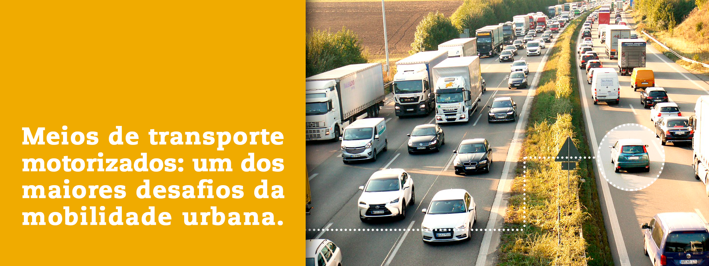
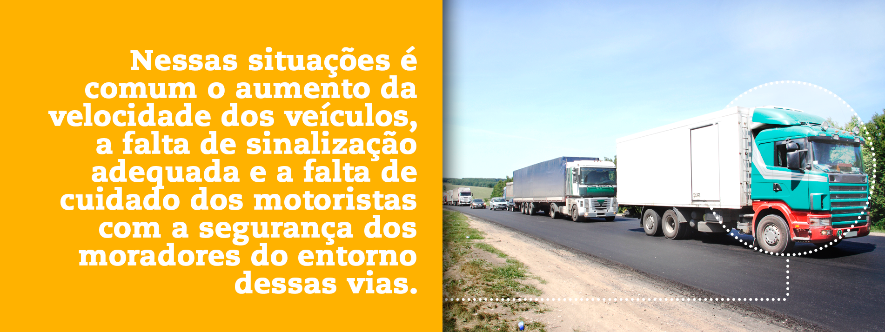

Módulos
Clique nos itens abaixo para visualizar os módulos.
Inserir video
A convivência entre as pessoas e o acesso aos bens e serviços que estão disponíveis nas cidades dependem das condições básicas que compõem o que chamamos de mobilidade urbana. Nesse sentido, pensar sobre a mobilidade urbana significa refletir sobre as relações das pessoas com a cidade e com o território nas suas diferentes formas de ocupação. Envolve a compreensão do funcionamento dos modos de transporte que são utilizados, mas também como se dá a relação das pessoas com as funções exercidas na cidade.
É importante relembrar que nos últimos 50 anos o Brasil passou por transformações que alteraram, significativamente, a maneira pela qual as populações vivenciam o território, em um processo crescente de urbanização que, atualmente, alcança cerca de 85% da população do país.
Essa rede complexa e diversificada de municípios e cidades, embora apresente características culturais, econômicas, sociais, ambientais e territoriais singulares, convive com um processo crescente de urbanização que está baseado na difusão do uso de veículos motorizados como principal meio de transporte, incluindo carros, ônibus, motos e embarcações fluviais que também utilizam como combustível o óleo diesel ou a gasolina.

inserir audio
A qualidade da mobilidade urbana mantém, portanto, uma relação direta com o planejamento da cidade. Garantir sistemas de mobilidade urbana, seguros e acessíveis, colocando o foco no bem-estar das pessoas, é uma visão estratégica do futuro das cidades.
inserir desenho cidade
Estudos e pesquisas que abordam os padrões de urbanização vivenciados no país hoje levam em conta não apenas os processos migratórios campo cidade, mas também como se dá a difusão do modo de vida urbano e a construção de novas zonas residenciais no território municipal fora dos limites urbanos tradicionais, mantendo com a cidade uma ligação de proximidade cotidiana2.
X Fechar
A mobilidade urbana é essencial para a vida cotidiana das pessoas que moram nas cidades, mas também para moradores de vilas e localidades rurais e ribeirinhas que, de alguma maneira, vivenciam ou sentem os efeitos da intensidade do processo de urbanização do território brasileiro, sobretudo a partir do século XX. Nesse sentido, a mobilidade urbana tem um significado universal, válido tanto para as cidades, como para as vilas das áreas rurais, quando estas são impactadas pelo asfaltamento e pelos meios motorizados de locomoção.

Cidades democráticas e mobilidade urbana
Há desigualdades sociais que são, em primeiro lugar, desigualdades territoriais, porque derivam do lugar onde cada qual se encontra. Seu tratamento não pode ser alheio às realidades territoriais. O cidadão é o indivíduo num lugar. A República somente será realmente democrática quando considerar todos os cidadãos como iguais, independentemente do lugar onde estejam.” (Milton Santos, 2007 p-151)
inserir audio
Mobilidade urbana e a quebra de paradigma no planejamento das cidades
O que ocorre nas grandes cidades atualmente pode servir como ponto de inflexão para aquelas cidades que ainda estão em processo de urbanização recente. É sabido que o uso de automóveis, pós-revolução industrial, cresceu em números alarmantes, especialmente nos grandes centros urbanos.
inserir infografico
Constata-se nas grandes cidades que esse aumento do número de veículos tende a saturar a capacidade das infraestruturas urbanas, numa relação ineficiente entre os sistemas de transportes individual e coletivo.
inserir video
Para isso, são adotadas medidas que redimensionam os espaços comuns destinados ao fluxo de veículos (coletivos e individuais), bicicletas e pedestres, em ordem de prioridade inversa.
inserir infografico
As soluções e as medidas a serem adotadas devem estar em consonância com as diferentes necessidades das pessoas, assim como dependem do engajamento dos diversos segmentos sociais. Mudanças de comportamento não ocorrem do dia para a noite. Também não podem ser impostas, sem diálogo e construção de acordos e parcerias.
X Fechar
Se a a pessoa é foco da mobilidade urbana, a participação cidadã no planejamento e na gestão das cidades passa a ser central.
O que diz a Lei de Mobilidade Urbana
inserir infografico
Além da Lei de Mobilidade Urbana, a maioria das cidades brasileiras incorporaram nos seus calendários três momentos de reflexão que buscam mobilizar a sociedade para a segurança no trânsito: o movimento “Maio Amarelo”, a Semana Nacional de Trânsito e o “Dia Mundial sem Carro”.

O Maio Amarelo é um movimento que pretende alertar a sociedade para a necessidade de enfrentarmos a violência no trânsito. Este movimento solicita que as pessoas, a sociedade e o poder público iluminem prédios públicos ou simplesmente usem uma fita amarela para chamar a atenção a essa calamidade, que no Brasil mata quase 40 mil pessoas por ano. A cor amarela foi escolhida, tendo em vista que no trânsito sinaliza “atenção”. O conteúdo das campanhas do Maio Amarelo estão disponíveis no sítio Maio Amarelo
X Fechar
A Semana Nacional de Trânsito (18 a 25 de setembro) é uma campanha nacional que foi instituída oficialmente no calendário brasileiro. Todo ano, o Conselho Nacional de Trânsito – CONTRAN define o tema a ser desenvolvido em todos os municípios brasileiros.
X Fechar
O “Dia Mundial Sem Carro” é um movimento global que surgiu na França em 1997 com o intuito de incentivar o fechamento das ruas das cidades para o pedestre, limitando a circulação de veículos como forma de sensibilizar a sociedade em torno dos problemas de mobilidade urbana enfrentados nas principais cidades. Esse movimento cresceu na Europa e a partir de 2002 toda comunidade europeia passou a adotar o dia 22 de setembro como marco dessa reflexão que busca melhorar a qualidade de vida dos cidadãos, com foco nas questões de transporte público e urbanização com metas ambientais que visam a diminuição da poluição.
X Fechar
Veja mais:
Sugestões de leitura:
Ao longo desta publicação serão apresentados um conjunto de conceitos e noções que buscam contribuir com a reflexão sobre a mobilidade urbana, enfatizando a importância do engajamento dos jovens e adultos em prol da construção de cidades socialmente mais justas e ambientalmente sustentáveis. Esses insumos podem ser utilizados como recursos didáticos em sala de aula, tomando como referência principal os saberes e conhecimentos dos alunos adquiridos a partir de suas vivências e suas experiências cotidianas nas cidades. A cidade enquanto lugar privilegiado para o exercício da cidadania é um campo vasto para experimentações e inovações capazes de alterar o padrão de urbanização altamente excludente e segregador que vem se consolidando no Brasil.
As condições de mobilidade urbana se constituem em um sistema que articula um conjunto de espaços públicos, equipamentos e serviços de transporte que só fazem sentido a partir de um determinado contexto social, histórico e territorial. Em outras palavras, não é possível descrever ou avaliar a qualidade da mobilidade urbana sem considerar a experiência e a vivência das pessoas no seu cotidiano, porque seu conteúdo material e simbólico depende da maneira pela qual a sociedade se organiza e se reproduz.
E isso não está relacionado somente às cidades ditas urbanizadas. As relações entre o rural e o urbano mudaram e são cada vez mais complexas e heterogêneas, sobretudo quando consideramos as singularidades ambientais, sociais, econômicas e culturais de cada uma das regiões do país. Mesmo nas regiões onde as cidades são pequenas ou nas localidades rurais ou ribeirinhas, as pessoas, de alguma maneira, vivenciam os feitos de um processo crescente de urbanização que, atualmente, alcança cerca de 85% da população do país.3
Rurais ou urbanas, é a partir do processo de planejamento da cidade que são definidas as melhores localizações para a implantação de equipamentos e serviços urbanos básicos tais como: escolas, hospitais, postos de saúde, centros de atendimento social, praças, parques, áreas de lazer, centros comerciais etc. O direito de acesso a esses equipamentos e serviços de maneira eficiente, segura e ambientalmente sustentável é essencial para a qualidade de vida nas cidades, sem deixar de lado a preocupação com as gerações futuras.
Para isso ocorrer, é necessário um espaço comum com foco nas pessoas, tornando a experiência urbana mais humana. Calçadas confortáveis sem obstáculos que prejudiquem o caminhar, rampas com declividades adequadas as diferentes necessidades das pessoas, arborização que crie zonas de sombreamento onde as pessoas circulam e sinalização que dê segurança no compartilhamento do espaço público são alguns desses cuidados. Um olhar atento sobre os espaços de uso comum facilmente revelará sob a ótica do cidadão aquilo que pode ser aprimorado para que a mobilidade urbana propicie uma experiência urbana inclusiva e democrática.
Nesse sentido, foi criada a Lei de Mobilidade Urbana. A Lei Federal 12.587 de 2012 que institui a Política de Mobilidade Urbana foi construída a partir de um amplo debate junto aos diversos setores sociedade e é considerada um avanço no país. Prevê as responsabilidades dos três entes da Federação (União, Estados e Municípios), estabelecendo as diretrizes para que o poder público local crie seus sistemas de transportes acessíveis. A sustentabilidade e universalidade no acesso à cidade, a participação da sociedade nas decisões e definição de prioridades e integração dos diferentes modos de transporte, com prioridade para o pedestre, usuários de transporte coletivo e dos meios não motorizados (ciclista) são os princípios fundamentais que estruturam a política nacional. Essa visão se coaduna de forma complementar às diretrizes do Estatuto da Cidade (Lei Federal n. 10.257/01), que é o marco principal para o planejamento das cidades sob o paradigma da função social da cidade.
A política nacional de mobilidade urbana prevê também que toda cidade com mais de 20 mil habitantes deve elaborar o seu plano de mobilidade urbana, considerando todo o território municipal, assim como prevê o Estatuto da Cidade em relação aos planos diretores municipais. Esses instrumentos de planejamento são fundamentais para que os municípios possam prever medidas de curto, médio e longo prazos, em um horizonte temporal de 10 anos. Portanto, os planos municipais de mobilidade urbana devem ser debatidos com a sociedade e estar alinhados com os planos diretores.
Papel da escola na promoção da cidadania
A materialização da cidadania e dos princípios democráticos ocorre no exercício diário, cotidiano. Sabemos que o direito de votar é apenas uma das dimensões do nosso sistema político-democrático e não esgota o exercício da cidadania.
O exercício pleno da cidadania envolve um conjunto de direitos que se expressam e se realizam no território.
De acordo com o Art. 6°, da Constituição Federal, são direitos sociais:
a educação, a saúde, o trabalho, a moradia, o lazer, a segurança, a previdência social, a proteção à maternidade e à infância, a assistência aos desamparados.”)
A garantia desses direitos constitucionais dependem muito de como os serviços urbanos e sociais estão distribuídos no território municipal, sejam nas áreas urbanas ou nas áreas rurais.
inserir infografico
Em qualquer projeto de formação para a cidadania precisamos conhecer um pouco mais dos nossos alunos e alunas.
- Onde costumam ir quando precisam de um atendimento médico? É necessário sair das proximidades da sua moradia? Ou como esse atendimento básico à saúde é oferecido pelo município às suas famílias?
- O lugar de moradia é na cidade ou na área rural? Quais são os modos de transporte utilizados no dia a dia? São adequados às necessidades de cada um?
Devemos nos perguntar sempre:
Os lugares onde moramos são acolhedores? (sejam nas cidades, nas vilas ou nas localidades rurais).
E, qual o sentimento de identidade das pessoas com o seu lugar de moradia, sobretudo, quando esse lugar oferece o acesso a serviços básicos de água e esgoto e de coleta de lixo regular?
Como nos sentimos quando não contamos com transporte público de qualidade, nem com calçadas adequadas ao nosso caminhar cotidiano com segurança e conforto?
Inserir audio
Com essas respostas podemos trabalhar diferentes percepções sobre a cidade e sobre o território, tornando visível as desigualdades que demarcam fronteiras de acesso ao cidadão, seja em função do local de moradia, da renda familiar, da cor da pele, do gênero ou mesmo da opção sexual de cada indivíduo.
Como será que adolescentes e jovens não-brancos, moradores de favelas se sentem quando são agredidos e confundidos com traficantes pela polícia, por estarem na rua se divertindo?
Será que o sentimento de pertencimento e acolhimento desses jovens que sofrem discriminações cotidianas é igual ao sentimento dos adolescentes de classe média e classe alta, que são bem tratados ou quase nunca abordados como suspeitos pela polícia?
Qual será o sentimento de identidade das pessoas com o seu lugar de moradia, quando esse lugar não conta com serviços básicos indispensáveis a uma boa qualidade de vida?
Consideram que os seus direitos como cidadão estão garantidos? Quais são as suas demandas?
O que os jovens e adultos na EJA pensam sobre a sua qualidade de vida?
Como avaliam o acesso à moradia de qualidade, à saúde, à educação, à cultura e ao lazer?
Dimensão coletiva da cidadania
Inserir vídeo
Nesse sentido, a cidadania, o exercício de direitos e deveres, envolve tanto o entendimento sobre a corresponsabilidade, como o reconhecimento da perspectiva do outro.
O processo de aprendizagem democrático e inclusivo requer espaços favoráveis à troca de experiências, ao diálogo e à compreensão do mundo de maneira crítica e reflexiva. Em vez de entregar respostas prontas e inadequadas aos alunos, desconsiderando as singularidades culturais e as diferentes visões de mundo que podem estar associadas a distinções de poder, desejo e necessidade.
Inserir infografico
Assim, podemos refletir: como a escola deve atuar para a promoção de diálogos, debates e pesquisas que incorporem os saberes e os conhecimentos produzidos socialmente?
Como estimular que o estudante seja protagonista do processo educativo, em busca de cidades mais humanas e inclusivas, tendo como referência o diálogo e a reflexão crítica sobre o mundo?
Como contribuir para que os jovens e adultos percebam o seu papel na transformação da sociedade por meio da promoção de cidades e territórios mais acolhedores, com respeito às diferenças?
Sugestões de leitura:
Quando falamos em cidadania na escola estamos falando de algo que de alguma forma já é trabalhado. Isso acontece não só pelas diretrizes legais de valorização dos temas transversais, mas também por uma dimensão ética necessária ao exercício da profissão de professor, de educador.
Entretanto, é mais raro observarmos uma reflexão do conjunto dos profissionais de educação sobre a formação para a cidadania desenvolvida na escola e sua relação com o currículo desenvolvido na EJA.
Como projeto interdisciplinar da escola, a formação para a cidadania deve ser permanentemente planejada, avaliada e revisada. Nesse sentido, antes de refletir sobre o papel da escola, consideramos fundamental iniciar com uma necessária atualização do significado de cidadania.
A expressão cidadania vem do latim “civitas”, que também significa cidade. Por isso, antigamente, definia-se o cidadão como aquele que fazia parte de uma cidade, adquirindo, assim, direitos e deveres. Atualmente, no Brasil, o conceito de cidadania extrapola os limites urbanos, compreendendo também a garantia de direitos daqueles que habitam as áreas rurais de um município. Nesse sentido, a cidadania está associada ao direito de ir e vir e de acesso aos bens e serviços que são produzidos socialmente, tais como acesso à saúde, moradia, alimentação e educação.
O direito à cidade, o acesso à saúde, educação, moradia e ao lazer integram um conjunto de valores que geram o sentimento de pertencimento a um lugar na sociedade. Pertencer a um lugar na sociedade, na perspectiva da cidadania, quer dizer que os cidadãos têm direitos iguais a usufruir desse lugar.
Morar com dignidade, num meio ambiente saudável significa ter acesso à educação, à cultura, ao esporte e ao lazer, ao saneamento básico, à mobilidade urbana, além de poder desfrutar das inúmeras possibilidades que a cidade e o uso do território oferecem, independente da classe social, etnia, gênero, credo ou qualquer identidade social singular.
Nesse sentido, as relações entre educação, cidade e território estão de acordo com a diretriz da Lei de Diretrizes e Bases da Educação que preconiza, nos conteúdos curriculares da educação básica, “a difusão de valores fundamentais ao interesse social, aos direitos e deveres dos cidadãos, de respeito ao bem comum e à ordem democrática…” (Art. 27, I, Lei de Diretrizes e Bases da Educação – LDB, 1996).
Sobre esse assunto, Moacir Gadotti, professor da Universidade de São Paulo, no artigo “A escola na cidade que educa” faz uma reflexão acerca do papel da escola cidadã e destaca que esta deve “contribuir para criar as condições que viabilizem a cidadania, por meio da socialização da informação, da discussão, da transparência, gerando uma nova mentalidade, uma nova cultura, em relação ao caráter público do espaço da cidade.” (Cadernos Cenpec, vol1. 2006).
O desafio é criar processos de aprendizagem que propiciem ao aluno superar o senso comum que reifica preconceitos e intolerâncias, fomentando o desejo pela construção coletiva do conhecimento, a partir da introdução de novos “saberes”, sem deixar de lado o acúmulo de conhecimento e “saberes” adquiridos pelo aluno ao longo da sua trajetória de vida.
Assim, o objetivo desse caderno é compartilhar reflexões e orientações pedagógicas que podem ser utilizadas em sala aula, abrindo as portas da escola para um olhar atento sobre a cidade e o território vivido no cotidiano.
Mobilidade Ativa
A mobilidade ativa é um conceito, relativamente novo, que parte da valorização da energia humana utilizada como propulsora do movimento e do deslocamento, como andar a pé ou de bicicleta. A ênfase nos meios de transporte não motorizados está no centro desse debate global a partir do qual as pessoas devem ter prioridade sobre os veículos motorizados nas cidades. O velocípede não motorizado, patins, patinetes ou skate também se enquadram no conceito de mobilidade ativa.

No Brasil, em apenas 50 anos, a população urbana não apenas ultrapassou a população rural, como atingiu mais de 80% da população.
X Fechar
A crescente industrialização e urbanização das cidades em escala global alterou consideravelmente a vida das pessoas no mundo.
No imaginário de uma sociedade de consumo, o acesso a um veículo motorizado não se limita a possibilidade de ir de um lugar para o outro numa velocidade maior e com menor esforço de energia humana. Significa também status ou comodismo, onde seu uso nem sempre é saudável e sustentável e se reflete em maior rapidez e segurança.
X Fechar
Paralelamente, houve um aumento exponencial do acesso da população à motorização, fenômeno que impactou o formato das cidades e ampliou a demanda por mais espaço para o fluxo de veículos motorizados individuais.
O resultado é que as pessoas caminham e pedalam cada vez menos e utilizam meios motorizados até mesmo para fazer curtos trajetos. Além disso, grande parte dos trabalhos realizados pelo ser humano não exigem grande gasto de energia física devido à automação e à ampliação das ocupações na área de serviços. O fenômeno do sedentarismo associado ao maior consumo de produtos ricos em carboidratos e gorduras traz como consequência a proliferação de doenças, como obesidade, diabetes, hipertensão arterial e doenças cardiovasculares, até mesmo depressão.
Mas, os impactos nocivos do uso excessivo dos meios motorizados individuais não param por aí: mais poluição sonora e atmosférica, congestionamentos, lesões e mortes no trânsito.
Nesse contexto, mesmo que o caminhar em dois pés esteja na origem do ser humano, foi preciso criar o conceito de mobilidade ativa como forma de resgatar essa dimensão humana básica.
Atualmente, é possível encontrar na internet uma variedade de sites que promovem a reflexão sobre “mobilidade ativa” a partir de estudos e pesquisas que explicitam os efeitos negativos da mobilidade urbana baseada no uso preponderante de veículos motorizados. Clique aqui e conheça mais alguns deles.
Dentre as publicações sobre mobilidade ativa disponíveis para download, destacam-se:
a) Revista Piseagrama nº 7 (2015) – Tema Passeio – artigos diversos sobre a “condição pedestre e ciclística, as calçadas e a falta delas, o caminhar e o errar, o tempo não produtivo nas cidades, o turismo, a relação com o outro nas ruas.”;
b) 8 Princípios da Calçada – Construindo cidades mais ativas da organização internacional WRI – Brasil;
c) Índice de caminhabilidade: Ferramenta, do Instituto de Políticas de Desenvolvimento do Transporte – ITDP Brasil;
d) Transporte Ativo – Caderno técnico para projetos de mobilidade urbana, da Secretaria Nacional de Mobilidade Urbana, Ministério das Cidades, 2017.
X Fechar
Inserir infografico
Inserir audio
A reflexão sobre essas questões associadas, diretamente, ao conceito de mobilidade ativa é uma oportunidade de construir com o aluno uma visão crítica sobre os processos de reprodução das cidades.
A reflexão sobre essas questões associadas, diretamente, ao conceito de mobilidade ativa é uma oportunidade de construir com o aluno uma visão crítica sobre os processos de reprodução das cidades.

Melhorar calçadas, arborizar ruas e construir ciclovias faz bem ao tráfego, reduz a poluição e torna pessoas e cidades mais saudáveis.
A prática da mobilidade ativa é considerada a mais eficiente para curtos deslocamentos, em geral, até cinco quilômetros. Caminhar e andar de bicicleta no dia a dia da vida na cidade é um dos modos mais eficazes de redução de custos na saúde pública.
Investir na qualificação de calçadas e na criação de ciclovias ou ciclofaixas é um estímulo à prática da mobilidade ativa.
Inserir infográfico
Inserir infográfico
- Como a mobilidade urbana se relaciona com a promoção da saúde?
- Quais são os hábitos urbanos podem ser associados à promoção da saúde?
- Como os deslocamentos por meios não motorizados, como andar de bicicleta e caminhar pode contribuir para que as pessoas tenham uma vida saudável?
Ouça
“O Pulso” – Titãs
Obs: Para assistir este conteúdo você precisa estar conectado à internet.
Veja mais
A mobilidade ativa, associada ao planejamento da expansão das cidades, é conceito que tem repercussões sobre os padrões correntes de urbanização que não otimizam recursos necessários ao melhor aproveitamento do uso e ocupação do solo urbano. Conforme Castro (2017), atualmente, uma série de estudos mostram que os modos de vida na cidade influenciam a qualidade de vida e à saúde da população, a exemplo do artigo Urban Sprawl and Risk for Being Overweight or Obese, de Russ Lopez (2004).
Cidades mais dispersas e espraiadas geram maiores distâncias e, consequentemente, deslocamentos mais longos, muitos dos quais não podem ser realizados a pé ou de bicicleta. A alternativa para esses deslocamentos é o uso do transporte público ou automóvel, onde o condutor e passageiros permanecem em inércia durante toda a viagem. Esse hábito diário e rotineiro contribui para o sedentarismo, contribuindo para o aparecimento de doenças cardiovasculares e aumento do número de pessoas obesas.”(CASTRO, 2017)
A adoção do conceito mobilidade urbana ativa no processo de planejamento e gestão das cidades pode contribuir, efetivamente, para transformar a maneira de lidar com a oferta de solo urbano, uma vez que os modos de transporte são fundamentais para a organização interna das cidades e do território municipal.
Essas preocupações devem estar presentes na hora de definir a morfologia das cidades por terem impactos diretos sobre a promoção da saúde dos cidadãos. Exercitar o corpo e reduzir possíveis doenças relacionadas ao sedentarismo não depende, exclusivamente, de uma atitude individual ou, simplesmente, correção comportamental. Enquanto as cidades crescem de maneira difusa e sem pactuação social em relação à sua forma final, resta ao cidadão arcar com os seus efeitos negativos e repercussões diretas sobre a sua qualidade de vida e sua saúde. Essas relações entre a morfologia das cidades e a qualidade de vida dos cidadãos nem sempre são explicitadas na educação de jovens e adultos.
Assim, cidades com espaços públicos apropriados ao pedestre e ao ciclista melhoram a mobilidade urbana e promovem qualidade de vida aos seus usuários. Estudos e pesquisas indicam que caminhadas diárias, uso de bicicletas e meios não motorizados de deslocamento reduzem a incidência de doenças relacionadas ao sedentarismo. Caminhadas ou pedaladas de 20 minutos por dia já são suficientes para que sejam economizados recursos financeiros significativos na manutenção do sistema público de saúde.
Muitas vezes a promoção da saúde é confundida com a construção de hospitais, com o tratamento das doenças. Na verdade, promoção da saúde está relacionada à promoção do nosso bem-estar físico e mental e, por isso, depende da qualidade do ambiente no qual vivemos. Saúde não é simplesmente estar sem doença. O conceito de Saúde segundo a “Organização Mundial de Saúde” (OMS) define a saúde como “um estado de completo bem-estar físico, mental e social e não somente ausência de afecções e enfermidades”.
Democratização do acesso à cultura, ao esporte e ao lazer
A mobilidade urbana é essencial para a democratização do acesso aos espaços abertos e públicos que propiciam a prática de exercícios e das diversas modalidades de esporte (individual ou coletivo) nas cidades.
Em muitas cidades, o poder público e a sociedade tem percebido a importância desses equipamentos para a qualidade de vida com inclusão social. A construção de uma diversidade de tipos de equipamentos ou a utilização do espaço público para diversas demandas, indo além das quadras de futebol. São quadras poliesportivas (futebol, basquete e vôlei), rampa de skate e “academias” ao ar livre, com equipamentos adequados às necessidades de idosos e idosas.


Algumas escolas também adotaram a prática de abrir suas portas para a realização de atividades nos fins de semana, permitindo maior integração com a comunidade e a utilização dos seus equipamentos de cultura, esporte e lazer. A abertura das escolas para a utilização dos seus equipamentos de esporte e cultura é uma alternativa quando há ausência desses equipamentos em determinados bairros da cidade.
No entanto, sabemos que nem todos os espaços destinados à prática de esporte, cultura e lazer podem estar presentes em todos os bairros de maneira equânime. Os parques e as florestas, a orla das praias e rios, assim como centros culturais e museus de grande porte, são alguns desses exemplos.
Esses espaços e equipamentos singulares que propiciam a realização de atividades físicas e de lazer para estarem acessíveis a todos dependem da qualidade da mobilidade urbana. A promoção da mobilidade ativa, assim como alternativas de transportes coletivos complementares, incluindo rotas de ciclovia ou ciclofaixa são essenciais para democratizar o acesso ao esporte, cultura e lazer nas cidades.
A reflexão crítica do aluno sobre a maneira como estão distribuídos os equipamentos públicos na cidade é importante para compreender como a mobilidade urbana pode garantir o acesso democrático a esses espaços.
- Quais tipos de equipamentos e atividades de esporte, cultura e lazer existem na cidade? Eles satisfazem as diferentes demandas existentes na sociedade?
- Como estão distribuídos nos bairros?
- Quais os bairros mais beneficiados e os menos privilegiados no acesso aos equipamentos de esporte, cultura e lazer?
- Como a melhoria da mobilidade urbana poderia facilitar o acesso aos equipamentos localizados nos diversos bairros da cidade?
- Quais os principais atrativos dos espaços públicos?
Há muito tempo que se preconiza que as cidades devem conter espaços destinados à prática de esporte, cultura e lazer. Essas atividades são fundamentais para o desenvolvimento e o bem-estar físico e psíquico das pessoas em qualquer faixa etária.
A abertura das escolas nos fins de semana também pode produzir um efeito benéfico relacionado ao sentimento de pertencimento da comunidade que usa esses espaços. A experiência do programa Abrindo Espaços lançado pela UNESCO no ano 2000 e depois do programa Escola Aberta em 2004 em parceria com o governo federal apresentou resultados significativos. Ao permitir a utilização da escola pela comunidade nos finais de semana para a realização de oficinas e atividades de lazer, proporcionou maior cuidado das pessoas com os equipamentos da escola, reduzindo ou eliminando atos de vandalismo e de furtos nos equipamentos que passaram a ser utilizados pelas comunidades. (NOLETO, Marlova Jovchelovitch. Abrindo espaços: educação e cultura para a paz – 4. ed. rev. Brasília: UNESCO, Fundação Vale, 2008, p.62).
X Fechar
Além de serem componentes obrigatórios da educação formal, a prática de esporte, a música, a dança, o teatro e diversas manifestações culturais que fazem parte da vida em sociedade, após a escolarização, se mantém no processo contínuo de aprendizagem e exercício da cidadania.
Assim, pensar sobre a qualidade da mobilidade urbana das cidades é um convite para o aluno pensar sobre as oportunidades que estão disponíveis na sua cidade. O acesso à cultura, ao esporte e ao lazer está assegurado como direito de todos na Constituição Federal e no Estatuto da Criança e do Adolescente. E o acesso pleno aos diferentes equipamentos da cidade também está previsto como direito na Política Nacional de Mobilidade Urbana.
O que diz a Constituição Federal:
Art. 6º São direitos sociais a educação, a saúde, a alimentação, o trabalho, a moradia, o transporte, o lazer, a segurança, a previdência social, a proteção à maternidade e à infância, a assistência aos desamparados, na forma desta Constituição.
Art. 215. O Estado garantirá a todos o pleno exercício dos direitos culturais e acesso às fontes da cultura nacional, e apoiará e incentivará a valorização e a difusão das manifestações culturais.
Art. 217. É dever do Estado fomentar práticas desportivas formais e não-formais, como direito de cada um, observados:
II – a destinação de recursos públicos para a promoção prioritária do desporto educacional4 e, em casos específicos, para a do desporto de alto rendimento;
§ 3º O Poder Público incentivará o lazer, como forma de promoção social.
O que diz o Estatuto da Criança e do Adolescente (Lei Federal nº 8.069/1990)
Art. 4º É dever da família, da comunidade, da sociedade em geral e do poder público assegurar, com absoluta prioridade, a efetivação dos direitos referentes à vida, à saúde, à alimentação, à educação, ao esporte, ao lazer, à profissionalização, à cultura, à dignidade, ao respeito, à liberdade e à convivência familiar e comunitária.
Art. 59. Os municípios, com apoio dos estados e da União, estimularão e facilitarão a destinação de recursos e espaços para programações culturais, esportivas e de lazer voltados para a infância e a juventude.
O que diz o Estatuto do Idoso (Lei Federal n° 10.741/2003)
As práticas desportivas formais são aquelas reguladas por normas e regras de cada modalidade esportiva e as informais são caracterizadas pelo caráter lúdico.
O desporto educacional se diferencia do desporto de alto rendimento, pois enquanto o primeiro só está preocupado com a dimensão educacional, o de alto rendimento tem como finalidade a obtenção de resultados em competições, profissionais ou amadoras.
Art. 1° É instituído o Estatuto do Idoso, destinado a regular os direitos assegurados às pessoas com idade igual ou superior a 60 (sessenta) anos.
Art. 2° O idoso goza de todos os direitos fundamentais inerentes à pessoa humana, sem prejuízo da proteção integral de que trata esta Lei, assegurando-se-lhe, por lei ou por outros meios, todas as oportunidades e facilidades, para preservação de sua saúde física e mental e seu aperfeiçoamento moral, intelectual, espiritual e social, em condições de liberdade e dignidade.
Art. 3° É obrigação da família, da comunidade, da sociedade e do Poder Público assegurar ao idoso, com absoluta prioridade, a efetivação do direito à vida, à saúde, à alimentação, à educação, à cultura, ao esporte, ao lazer, ao trabalho, à cidadania, à liberdade, à dignidade, ao respeito e à convivência familiar e comunitária.
O que diz a Política Nacional de Mobilidade Urbana (Lei nº 12.587/2012)
Art. 5 º. A Política Nacional de Mobilidade Urbana está fundamentada nos seguintes princípios:
I – acessibilidade universal;
VI – segurança nos deslocamentos das pessoas;
Art. 7 º. A Política Nacional de Mobilidade Urbana possui os seguintes objetivos:I – reduzir as desigualdades e promover a inclusão social;
II – promover o acesso aos serviços básicos e equipamentos sociais;
III – proporcionar melhoria nas condições urbanas da população no que se refere à acessibilidade e à mobilidade;
IV – promover o desenvolvimento sustentável com a mitigação dos custos ambientais e socioeconômicos dos deslocamentos de pessoas e cargas nas cidades; e
V – consolidar a gestão democrática como instrumento e garantia da construção contínua do aprimoramento da mobilidade urbana.
Acessibilidade universal
O jeito mais antigo do ser humano se locomover é caminhando. Além de não ter custo (ou apenas o custo de reposição do nosso calçado), traz benefícios à saúde, permite a contemplação e o encontro com outras pessoas. Afinal, somos pedestres, tendo ou não um veículo, pois há sempre um momento no qual o motorista é pedestre.
Entretanto, depois da difusão e disseminação do uso de veículos motorizados, a rua deixou de ser um espaço ocupado, prioritariamente, pelas pessoas, pelas charretes ou por bicicletas e passou a ser dominado pelos carros, caminhões e motos. A convivência perigosa entre veículos motorizados e pessoas ampliou a necessidade de se separar o espaço de circulação dos veículos e o espaço de circulação das pessoas com a demarcação da via pública segregada da calçada.
As cidades modernas brasileiras cresceram privilegiando o deslocamento das pessoas por veículos motorizados. A maioria dos investimentos públicos foi direcionado para a realização de obras viárias que beneficiassem o tráfego de veículos, alargando o espaço para os carros e diminuindo o espaço dos pedestres. Os resultados não foram satisfatórios. A maioria das cidades se tornou insegura. A velocidade dos veículos motorizados coloca em risco a vida e a segurança das pessoas.
X Fechar
A importância dos carros nas cidades leva a distorções visíveis, é comum encontrarmos vias urbanas asfaltadas com calçadas precárias, estreitas, desniveladas e esburacadas. Às vezes nem calçada existe e as pessoas precisam disputar com os veículos a utilização das vias públicas.

Mas, o desrespeito ao pedestre não para por aí. Além das ruas normalmente terem mais espaços reservados para as vias destinadas ao fluxo de veículos motorizados, é comum observarmos práticas ilegais de ocupação das calçadas para estacionamento irregular de veículos, funcionamento de bares, sinalização e árvores colocados em locais inadequados.


Mas, quem é o pedestre? Além de ser uma pessoa que utiliza a energia humana para o seu deslocamento, o pedestre assume características específicas seguindo as diferenças físicas, sociais e culturais entre as pessoas numa determinada sociedade. São crianças, jovens, adultos e idosos, são homens e mulheres, pessoas com diferente cor de pele, ricos e pobres, pessoas com diferentes deficiências, físicas, auditiva e visual, e pessoas com mobilidade reduzida, como idosos, gestantes, obesos e pessoas com criança de colo.
Essas diferentes características não deveriam ser um obstáculo para que todos pudessem exercer o direito de caminhar na cidade com segurança e autonomia.
Hoje, várias cidades no mundo já estão preparadas para a circulação de pessoas com deficiência física ou visual, com o máximo de autonomia possível. O Brasil avançou bastante ao aprovar leis que reconhecem os direitos das pessoas com deficiência ou com mobilidade reduzida.
Essas orientações visam criar condições de acessibilidade para que uma pessoa com uma cadeira de rodas ou deficiente visual, por exemplo, possa se locomover sozinha; assim como uma pessoa com um carrinho de bebê possa trafegar com facilidade ou uma pessoa idosa não tenha que fazer tanto esforço para passar do nível da calçada para o nível da via. Para isso, conheça algumas iniciativas de acessibilidade nas vias públicas.
inserir infográfico


- Na sua cidade ou bairro os equipamentos públicos estão adaptados para inclusão das pessoas com deficiência?
- Qual a qualidade das calçadas do seu trajeto cotidiano?
- Em sua maioria são largas, niveladas e adaptadas?
- Você conhece alguém com deficiência ou mobilidade reduzida? Pergunte a elas quais as dificuldades encontradas para se locomover e acessar os lugares e os equipamentos públicos.
Veja mais:
A instituição da Lei Federal nº 11.340/2006, mais conhecida como “Lei Maria da Penha” representa um avanço da sociedade brasileira, especialmente, no reconhecimento de um problema generalizado que ameaça, permanentemente, a vida das mulheres no país. A lei cria mecanismos para coibir a violência doméstica e familiar contra a mulher, nos termos do § 8° do art. 226 da Constituição Federal, além de criminalizar todas as formas de discriminação contra as mulheres, adotando os princípios e diretrizes da “Convenção Interamericana para Prevenir, Punir e Erradicar a Violência contra a Mulher”. A lei dispõe também sobre a criação dos “Juizados de Violência Doméstica e Familiar contra a Mulher” e altera o Código de Processo Penal, o Código Penal e a Lei de Execução Penal.
Para abordar mais sobre a violência contra a mulher, sugerimos o filme Precisamos falar do assédio (2016) com duração de 82 minutos e direção de Paula Sacchetta, que foi realizado a partir de depoimentos das mulheres sobre situações de violência enfrentadas em casa e no espaço público. Os depoimentos foram filmados numa van que parou em nove pontos da cidade de São Paulo e do Rio de Janeiro. Mais de 100 mulheres se dispuseram a contar sua história, sendo que 26 foram selecionadas para integrar o filme.
Além deste filme, outras referências podem ser utilizadas na reflexão sobre a violência contra as mulheres no espaço público, onde o assédio, muitas vezes, é confundido e apresentado como elogio ou uma simples “cantada”. O documentário Chega de Fiu-Fiu (2018) de 73 minutos, com direção de Amanda Kamanchek e Fernanda Frazão, narra a história de resistência de três mulheres, que “propõem novas formas de (con)viver no espaço público”. Outra abordagem interessante é a palestra de Juliana de Faria, que fala da campanha “Chega de Fiu-fiu, Cantada não é elogio”, com duração de 16 minutos. Para abordar o preconceito contra homossexuais e transgêneros, sugerimos o videodocumentário de Alice Fornel, “O amor é a cura” de 2018 com duração de 9 minutos (disponível em www.videocamp.com/pt/movies?director=Aline+Fornel).
Segurança no trânsito
Desde a disseminação das cidades e da proliferação dos veículos motorizados, que o trânsito é um dos fatores que mais causa mortes e provoca lesões e deficiências permanentes no mundo.
Inserir infográfico

Inserir audio
Uma cidade pode expressar a prioridade ao pedestre e ao ciclista, sem excluir os motoristas, beneficiando a mobilidade urbana de todos. Para isso, deve-se ampliar as condições de caminhar e pedalar, preferencialmente criando pistas segregadas ou separadas de veículos motorizados.
Nas vias em que isso não seja possível, deve-se sinalizar o compartilhamento do carro com a bicicleta e a redução da velocidade.


Portanto, para alcançar a segurança no trânsito é preciso combinar várias ações: de educação, fiscalização, punição às infrações, melhoria da sinalização viária e condições de segurança para pedestres e ciclistas com calçadas amplas e acessíveis, ciclovias e ciclofaixas, além da prioridade ao transporte coletivo com faixas exclusivas, rapidez, conforto e segurança.
Acidente? Por que continuamos a chamar de acidente o que pode ser evitado?
Um acidente é uma fatalidade, uma falta de sorte, uma coisa que não temos como controlar. Mas será que podemos dizer que morrem quase 40 mil pessoas no trânsito por ano no Brasil por azar ou destino?
Como sinaliza Eduardo Biavatti, no seu livro “Educar para a segurança nas ruas”: “Quando chamamos uma colisão entre veículos de ‘acidente’, atribuímos uma explicação que pode ser completamente falsa. Nada é menos verdadeiro, entretanto, quando compreendemos que a violência no trânsito é um produto histórico de escolhas políticas que elegeram, desde o final do século XIX, a primazia dos veículos motorizados, de velocidade e de avenidas e estradas, no lugar da proteção da vida humana e da sustentabilidade do planeta”.
inserir infográfico
Motocicleta, perigo! Cuidados que os motociclistas devem ter
Sem dúvida, quando falamos de veículos motorizados, o de maior vulnerabilidade é a motocicleta. Em qualquer batida o para-choque é o corpo e o resultado pode ser fatal. Por isso, deve-se proteger a cabeça com o uso correto do capacete. Batidas em certas áreas do cérebro podem “desligar” determinadas funções que comandam nossa coordenação motora, que nos permitem falar, comer sozinho e ter controle sobre as nossas necessidades de urinar e defecar.
Diante da fragilidade do transporte público na maioria das cidades brasileiras e do custo do automóvel, a motocicleta se tornou uma opção para grande parte da população.
Você sabe como usar o capacete corretamente?
Em função da importância do uso correto do capacete para evitar mortes e lesões permanentes nos motociclistas envolvidos em colisões, a Organização Mundial de Saúde (OMS) elaborou em 2007, o manual “Capacetes”.
A tabela abaixo sintetiza os resultados dos diversos estudos sobre a importância do uso do capacete para evitar mortes e lesões.
A tabela abaixo sintetiza os resultados dos diversos estudos sobre a importância do uso do capacete para evitar mortes e lesões.
Resumo da análise sistemática da eficácia dos capacetes para motociclistas
| Não usando capacete | Usando capacete |
|---|---|
|
|
Fonte: Organização Mundial de Saúde (OMS), 2007.
Como vimos anteriormente, a diminuição de viagens motorizadas contribui para promoção da segurança no trânsito. Países que incentivaram o uso da bicicleta reduziram os índices de acidentes de trânsito.
Inserir infográfico
- E você, como avalia a segurança no trânsito na sua cidade?
- Você acha que tem muito acidente de trânsito? Você conhece alguém que foi vítima da violência no trânsito?
- Como funciona o transporte coletivo na sua cidade? É eficiente e acessível?
- E pedestres e ciclistas têm segurança e incentivo para caminharem e andarem de bicicleta? A sua cidade dá mais prioridade aos pedestres e ciclistas ou aos motoristas dos veículos individuais motorizados?
- O que você acha que deveria ser feito para promover a segurança no trânsito?
- Como você se classificaria? Mais sedentário ou mais ativo?
Quando abordamos o tema da mobilidade urbana relacionada à segurança no trânsito, enfatizamos a perspectiva do pedestre como elemento central no enfrentamento da violência no trânsito e na promoção da melhoria da qualidade dos deslocamentos das pessoas. Adotar essa perspectiva implica uma mudança de postura da sociedade e do poder público no sentido de garantir a redução da velocidade nas vias internas aos bairros e caminhos seguros e agradáveis para os pedestres com calçadas niveladas, largas e acessíveis, além da integração do caminhar com o transporte coletivo.
A proliferação de automóveis trouxe também os congestionamentos nas médias e grandes cidades, contribuindo também para que a motocicleta aparecesse como alternativa ao trânsito caótico. Até mesmo nas áreas rurais e pequenas cidades, é possível verificar a substituição do cavalo pela moto.
Mas, assim como cresceu a frota de motocicletas, cresceu igualmente o número de pessoas mortas ou com danos permanentes. Do ano 2000 a 2016, a frota de motocicletas cresceu 1.286,91%.
Não é o caso de proibir a circulação das motocicletas, mas de reduzir a opção pela falta de alternativa. Seja porque o transporte coletivo não funciona ou tem o custo semelhante e é mais rápido, ou ainda porque a cidade não oferece segurança ao ciclista. Muitas pessoas optam pela motocicleta devido à ausência ou precariedade do transporte coletivo.
Geralmente, o transporte coletivo apresenta uma alta tarifa, não oferece conforto e demora muito tempo para realizar o trajeto, seja pelo tempo de espera ou pelo percurso propriamente dito. A ausência de ciclovias e ciclofaixas ou de sinalização para compartilhamento da via não proporciona a segurança necessária para que mais pessoas façam uso da bicicleta como meio de transporte para o trabalho ou para estudo. Investimentos para corrigir essas ineficiências, além de melhorar a mobilidade urbana, podem reduzir a demanda pelos meios de transporte motorizados.
O fato é que as motocicletas continuarão circulando e os motociclistas precisam adotar medidas simples de segurança para minorar os danos de uma colisão. A primeira questão básica é a velocidade do veículo. A velocidade é um fator fundamental para diminuir ou agravar a severidade de uma colisão ou de uma queda, podendo evitar a morte e o dano permanente. Mas, sem capacete, qualquer colisão, mesmo em velocidade baixa, pode ser fatal.
A mobilidade urbana é uma dimensão essencial da vida cotidiana nas cidades e de integração do território municipal.
Como vimos no capítulo 2 desse caderno, de acordo com o IBGE, cerca de 84% dos habitantes do Brasil vivem na área urbana e apenas 16% na área rural. Essa concentração da população nas cidades é uma tendência global, especialmente, porque são nas áreas urbanas que se localizam os principais serviços e equipamentos que se destinam ao atendimento de todos os habitantes que residem do município. Por isso, quando falamos em mobilidade urbana, não estamos excluindo a população que mora ou trabalha nas áreas rurais. Enfatizamos aqui a necessidade de pensar e construir cidades que permitam o deslocamento seguro das pessoas que buscam na cidade o atendimento de suas demandas, necessidades e desejos, sejam moradores urbanos ou moradores rurais.
X Fechar
Muitas vezes os alunos que residem nas áreas rurais, especialmente do ensino fundamental, segundo segmento e do ensino médio, precisam se deslocar até o centro da cidade para acessar as escolas ou outros equipamentos de atendimento social. Nesses casos, são utilizados diferentes modos de transporte que variam em função das distâncias entre a casa e a escola.
Moradores das áreas rurais também frequentam os centros urbanos para acessar os equipamentos de saúde, cultura e lazer, assim como buscam nas cidades diversos serviços de apoio à vida no campo. Nesse sentido, a experiência urbana torna-se uma experiência cotidiana universal que integra a totalidade dos habitantes do município, considerando as suas especificidades e singularidades.
X Fechar
Esse encontro de pessoas e confluência de diversidades torna a experiência urbana uma oportunidade de enriquecer os repertórios educativos, integrando, de maneira dialética, a vida cotidiana dos alunos aos saberes reproduzidos nas escolas. Portanto, refletir sobre a mobilidade urbana envolve a compreensão de processos complexos que se configuram a partir do deslocamento das pessoas de um lugar ao outro, sendo assim uma oportunidade de aprendizagem para o aluno ampliar a compreensão do seu papel ativo na construção do seu conhecimento e da sua visão de mundo.
Democratizar o acesso à educação, nessa perspectiva, não se restringe ao acesso do aluno à escola, embora esse seja um aspecto importante da relação entre mobilidade urbana e educação. Significa incorporar aos processos de aprendizado as condições para que o aluno seja sujeito ativo da construção do conhecimento.
Nesse sentido, é preciso estabelecer um diálogo que ultrapasse os muros da escola. Num lugar a partir do qual o aluno se veja como agente produtor do conhecimento.
Objetivos
- Convidar os alunos a pensar a cidade e o território nas suas dimensões simbólicas, sociais, culturais, políticas e econômicas é uma das maneiras para ampliar a capacidade dos jovens e adultos colocarem-se como sujeitos na sociedade.
- Convidar os alunos a aprofundar o seu conhecimento sobre a sua cidade e o seu território, em diferentes dimensões, a partir das noções de mobilidade ativa, espaço público, espaço comum e cidadania.
Para isso, apresentaremos recursos didáticos que podem ser utilizados em sala de aula e também orientar atividades de pesquisa e reconhecimento dos espaços da cidade na perspectiva do aluno.
Educar para cidadania a partir da vivência no espaço público
Uma escola comprometida com a promoção da cidadania deve incentivar a reflexão dos estudantes, utilizando dinâmicas que possam gerar empatia entre crianças, idosos, pessoas com deficiência, ricos, pobres, negros, não-brancos e brancos, homens, mulheres, homossexuais, heterossexuais etc.
Cidadania, assim como democracia se aprende e se atualiza na prática, na relação com o outro, considerando cada momento histórico. Nesse sentido, levar para sala de aula processos vivenciados por jovens e adultos no espaço da cidade e do território para que os alunos exercitem o pensamento crítico acerca dos contextos e das condições que podem favorecer ou prejudicar o exercício da cidadania.
X Fechar
Como promover esse contato com a diversidade, na perspectiva educacional?